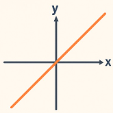
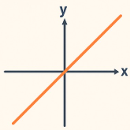
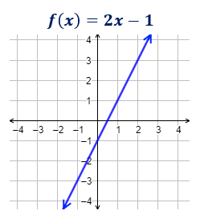
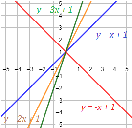

Una función lineal es una relación matemática entre dos variables que se puede expresar en la forma:

y = mx + b
donde:
m es la pendiente de la recta.
b es la ordenada al origen.
x es la variable independiente
y es la variable dependiente.
Una función lineal es una relación matemática entre dos variables que se puede expresar en la forma:

y = mx + b
donde:
m es la pendiente de la recta.
b es la ordenada al origen.
x es la variable independiente
y es la variable dependiente.

La pendiente de la función es m=2 y la ordenada es b=−1.
La pendiente es el coeficiente de la variable, es decir, m.
Geométricamente, cuanto mayor es la pendiente, más inclinada es la recta. Es decir, más rápido crece la función.
Ejemplo
Rectas con pendientes 1, 2, 3 y -1:
Se observa que la recta con pendiente negativa −1 es decreciente (la roja). Las otras tres rectas son crecientes.
De las rectas crecientes, la que crece más rápidamente es la verde (pendiente 3).
Puedes mover la pendiente (m) y veras que las rectas también se mueven.
Una función lineal siempre corta al eje Y en un punto. También, corta al eje X en un punto.
El punto de corte con el eje Y es el punto de la recta que tiene la primera coordenada igual a 0:
(0, f(0))
El punto de corte con el eje X es el punto de la recta que tiene 0 en la segunda coordenada. Se calcula igualando a 0 la función y resolviendo la ecuación obtenida.
EJEMPLO
Calculamos los puntos de corte de la función del ejemplo anterior,
f(x)=2x-3
Corte con el eje Y:
f(0)=-3
Es el punto
(0,-3)
Se observa que la segunda coordenada es la ordenada.
Corte con el eje X:
2x-3=0
2x=3
x=3/2
Es el punto
(3/2, 0)
podemos ver el siguiente video
Obra publicada con Licencia Creative Commons Reconocimiento Compartir igual 4.0